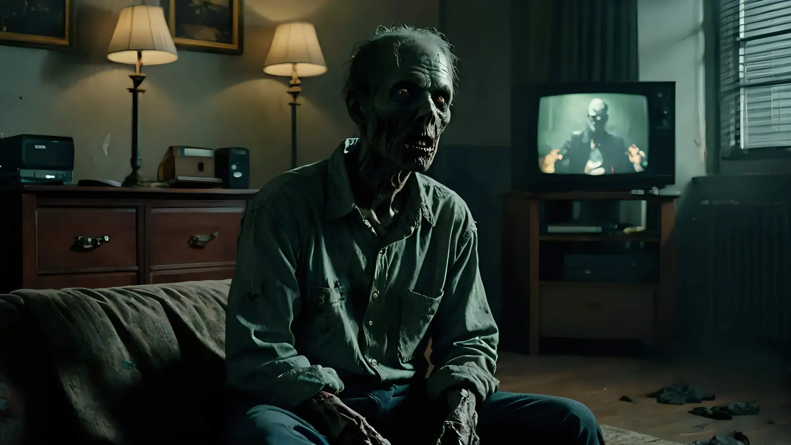

.jpg)
In recent years, society has witnessed a growing awareness of the potential dangers associated with glorifying celebrities, particularly those with problematic or controversial pasts. This phenomenon, often referred to as "glorification disease," has the power to distort our perception of reality and lead us down a path of emotional attachment, denial, and even tribalism.
One of the most notable cases that exemplifies the consequences of this disease is the posthumous worship of Michael Jackson. Jackson, widely recognized as one of the biggest weirdos of all time, experienced a significant decline in his career after his involvement in certain questionable activities came to light.
.jpg)
In the battle against "glorification disease," a thought-provoking and eye-opening documentary series is in the works. "Trial by Media: A Michael Jackson Stan Story," directed by the talented filmmaker Jin Martini, is set to be released in 2024. This three-part film aims to shed light on the alarming obsession and disturbing behaviors exhibited by some Michael Jackson stans around the world.
The documentary delves deep into the lives of these die-hard fans, who not only idolize Jackson but also vehemently defend him against any criticism. Their unwavering support and blind loyalty often lead to the marginalization of opposing viewpoints, as these fans tirelessly demonize the media and non-believers alike.
.jpg)
When "Trial by Media: A Michael Jackson Stan Story" releases, it is highly likely that the response to the documentary will be met with a mixture of polarizing opinions. As with any topic involving celebrities and their legacies, people tend to view things through different lenses, and this thought-provoking film will undoubtedly ignite passionate debates.
The majority of Jackson glorifiers, who have idolized the pop icon and defended him vehemently over the years, may perceive the documentary as a "one-sided hit job" or a "mockumentary." These individuals may argue that glorifying a deceased celebrity is a basic human right and that it holds more significance than addressing pressing global issues such as war, poverty, disease, famine, or deforestation.
.jpg)
However, there is no doubt that many others will applaud Trial by Media: A Michael Jackson Stan Story for its bravery, honesty, and empathy toward those who value critical thinking and common sense. This long-overdue documentary aims to expose the dark side of celebrity glorification disease and reveal the dynamics of manipulated misinformation perpetuated by stans. It offers an opportunity for society to engage in a necessary conversation about accountability, justice, and the recognition that celebrities, despite their fame, are fallible human beings capable of both good and bad actions.
Furthermore, this documentary emphasizes the need for empathy and understanding toward those who value critical thinking and common sense. It recognizes that not all fans blindly support their idols, and there are individuals who are willing to question and challenge the narratives put forth by stans.
.jpg)
Ultimately, "Trial by Media: A Michael Jackson Stan Story" serves as more than just a cautionary tale – it serves as a call to action. It prompts us to reevaluate our own role as fans and advocates for a healthier cultural landscape. It implores us to embrace critical thinking and empathy, driving the conversation towards a more nuanced understanding of those we admire.
In conclusion, the documentary challenges us to deconstruct the worship of idols and instead foster a culture of accountability and realistic expectations. By doing so, we can shift the narrative away from blind acceptance and towards a deeper appreciation and understanding of the flawed humanity that exists within even the most revered icons.
{kind=link}
{kind=link}
{kind=link}
{kind=link}
{kind=link}
{kind=link}